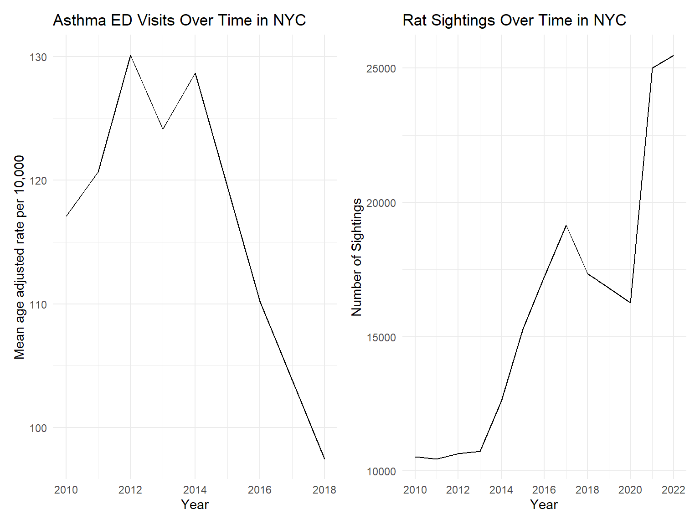
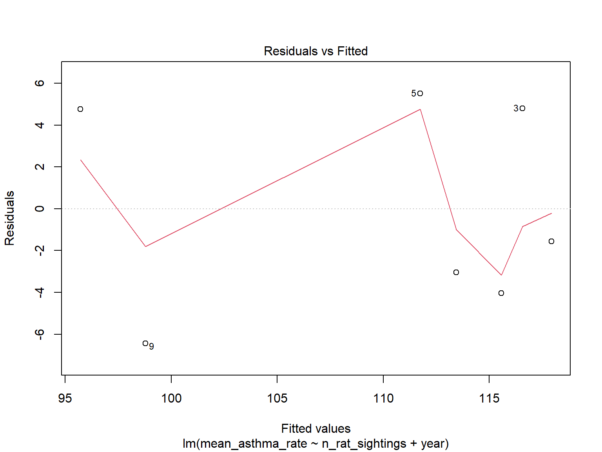
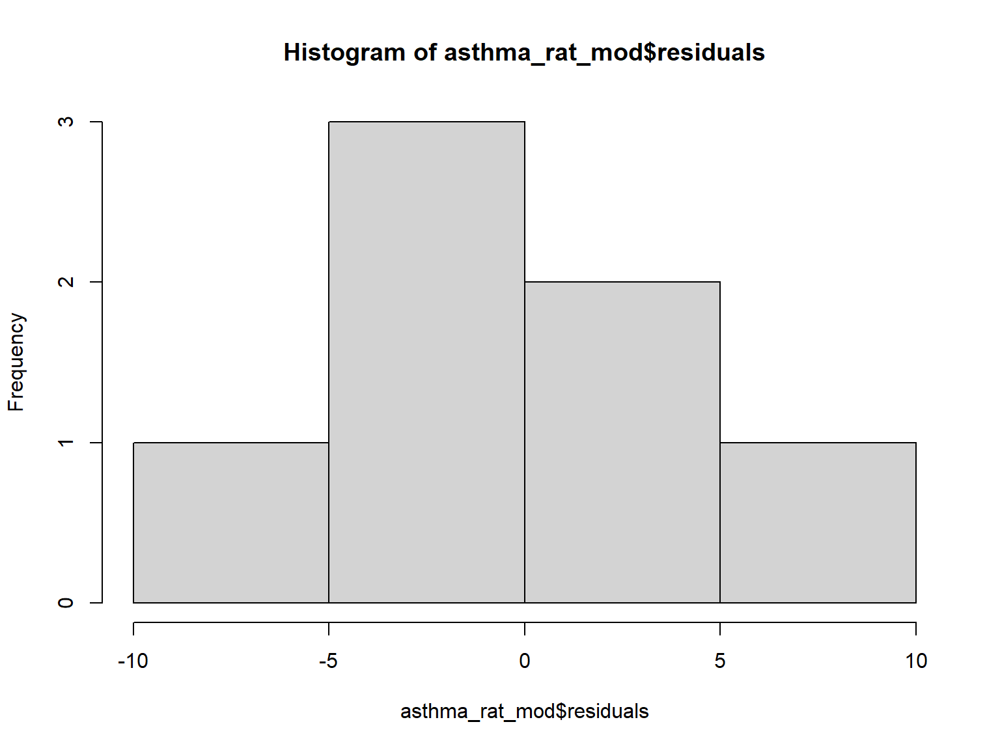
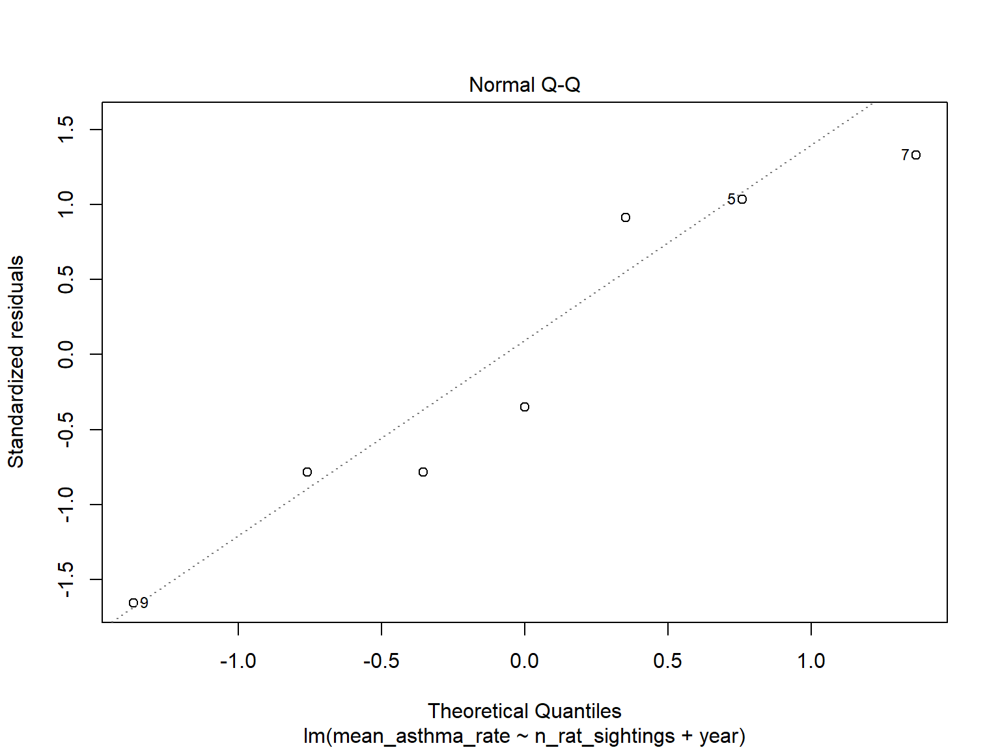
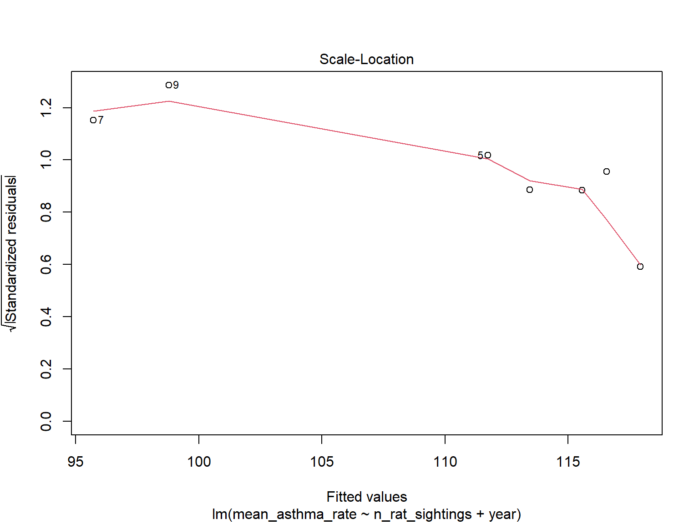

We wanted to explore if the following question: Do asthma rates differ based on rat sightings?

We wanted to run some statistical tests and models to see if there were any significant associations between rat sightings and asthma rates.
We used a linear regression model to describe the relationship between asthma rates and rat sightings. Age-adjusted asthma-related ER visit rates per 10,000 grouped by year were used as the dependent variable. The total number of rat sightings per year and the year were used as predictor variables.
## # A tibble: 3 × 5
## term estimate std.error statistic p.value
## <chr> <dbl> <dbl> <dbl> <dbl>
## 1 (Intercept) -3425. 4643. -0.738 0.502
## 2 n_rat_sightings -0.00425 0.00207 -2.05 0.109
## 3 year 1.78 2.32 0.769 0.485The slope coefficient for the total number of rat sightings per year was -4.25e-03, but it was found to be insignificant at the 95% confidence level as the p- value was 0.11 (>0.05). Thus, we can reject the null hypothesis and conclude that there is no association between asthma rates and rat sightings at the 0.05 level of significance, while controlling for years.
Next, we checked the following assumptions underlying this linear regression model to determine its validity.
Testing Liner Relationship

Testing whether the residuals are normally distributed

Testing Homoscedasticity

##
## studentized Breusch-Pagan test
##
## data: asthma_rat_mod
## BP = 3.6938, df = 2, p-value = 0.1577